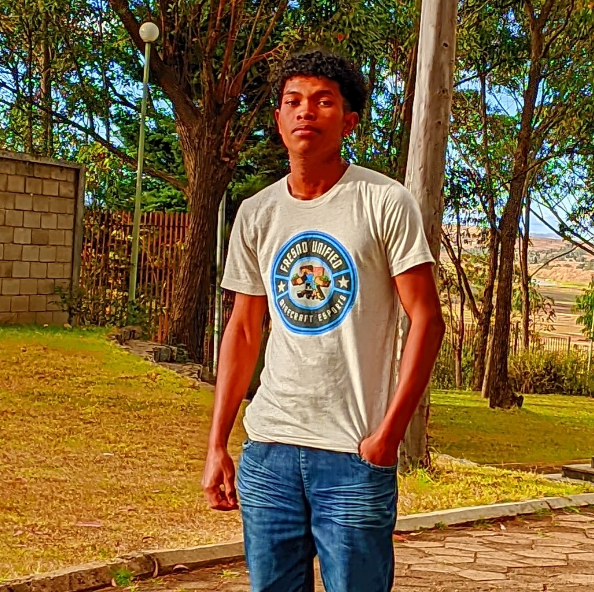

Hello, I am
Software Engineering student passionate about automation, Linux administration, Cloud infrastructures, and CI/CD pipelines. My goal is to become a DevOps Engineer by designing modern, secure, and automated infrastructures.

Linux administration, virtualization and designing reliable environments.
Creating CI/CD pipelines with Jenkins, GitHub Actions and Bash scripting.
Deploying applications with Docker, Kubernetes and Terraform.
Development of a mobile network subnetting tool (IP/CIDR, VLSM, class detection) built with React Native and Expo. Integrated a complete DevOps workflow: automated Android APK builds via EAS Build, credentials and versioning management, and a CI/CD pipeline with GitHub Actions triggering a build on every push."
Voir sur GitHubInnovative cybersecurity tool designed for mobile system administrators. Powered by AI (Google Gemini), it analyzes Linux authentication logs in real-time to detect threats (Brute Force, privileges) via an interactive Streamlit graphical interface optimized for Termux and UserLand.
View on GitHubSimulation of a complete DevOps infrastructure under QEMU/KVM. System configuration automation with Ansible and integration of CI/CD pipelines (GitHub Actions) for testing and deployment.
View on GitHubSoftware Engineering Track ASJA Antsirabe